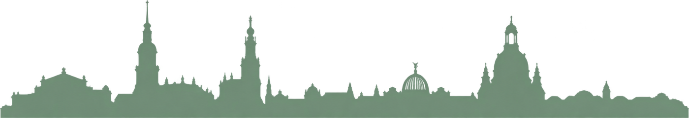

Wische seitlich, um alle fünf Spalten zu sehen.

Dresden BullsVerein Kanusport Dresden e. V.Markiere erledigte Aufgaben. Fünf Felder in einer Reihe, Spalte oder Diagonale ergeben ein Bingo.

Wische seitlich, um alle fünf Spalten zu sehen.